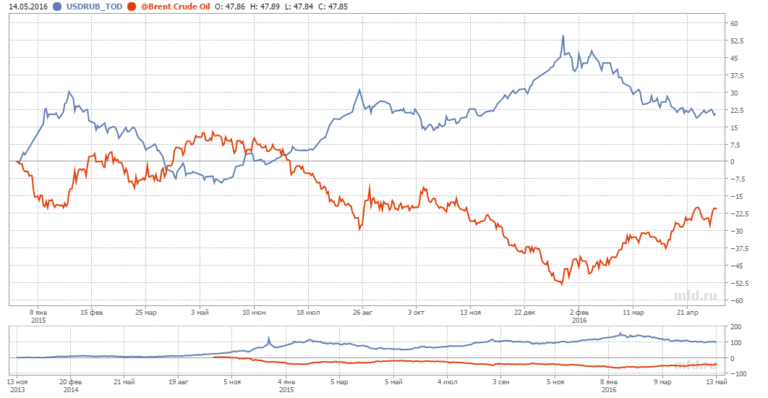
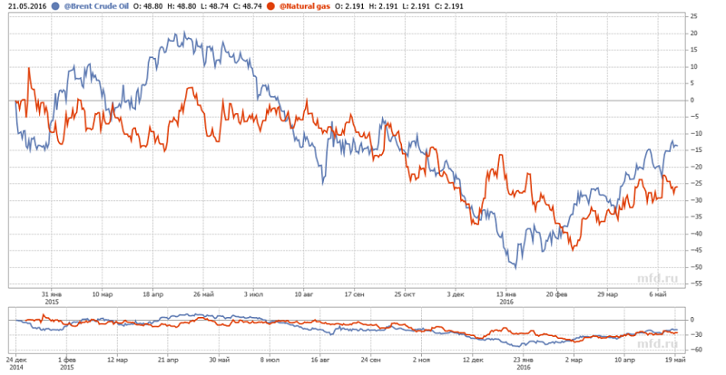
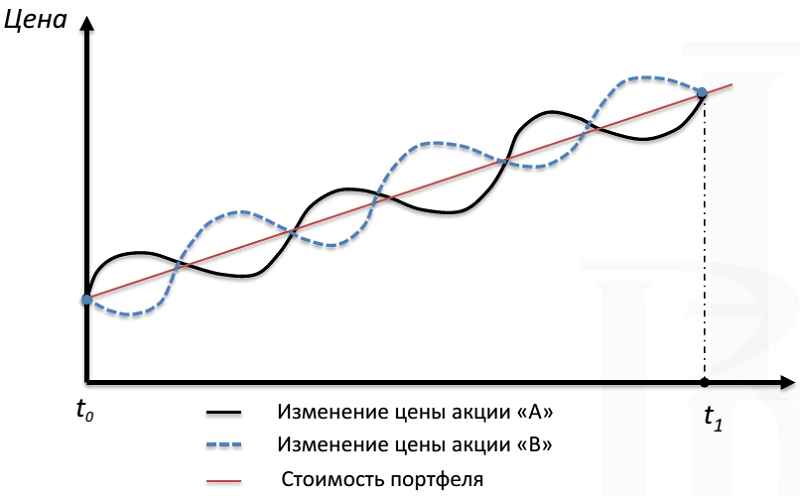
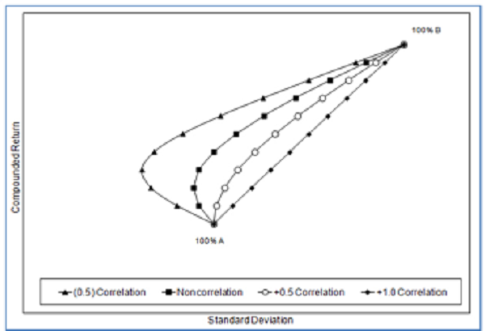
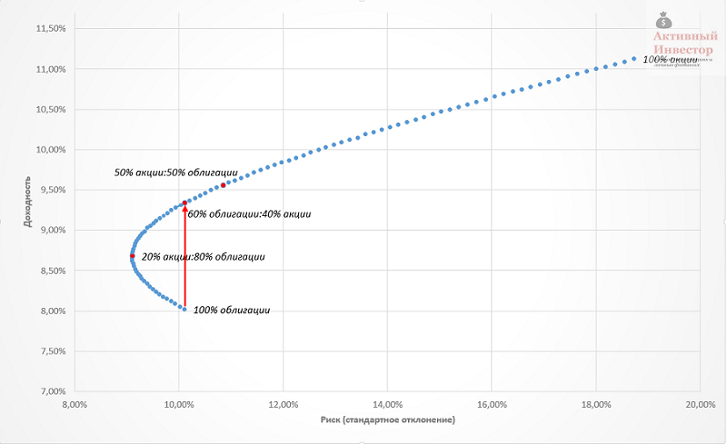

В портфель должны включаться слабо взаимосвязанные активы, цена которых ведет себя по разному в одинаковых условиях. Это снижает риск портфеля и создает портфельный эффект. Связь разных активов между собой можно оценить математически с помощью корреляции. Корреляция показывает в какой степени динамика стоимости одного актива соотносится с динамикой другого актива.
Корреляция может принимать значения от +1 (положительная) до -1 (отрицательная). Если цены активов движутся в одном направлении (оба растут или оба снижаются), корреляция положительна (больше 0), если цены активов движутся в противоположных направлениях (один растет, второй снижается), корреляция отрицательная (меньше 0).
Корреляция равная +1 означает, что стоимость активов меняются идентично друг другу: если один актив вырос на 10%, второй тоже растет на 10%. Корреляция равная -1 означает, что цены движутся максимально противоположно. Нулевая корреляция означает, что взаимосвязи нет.
Из реальной жизни пример негативной корреляции можно найти в динамике курса доллара и цен на нефть в 2015-16 годах: когда нефть падала, курс доллара рос.
Положительная корреляция есть между ценами на нефть и натуральный газ: их цены двигаются схожим образом.
Поведение активов влияет на риск портфеля. Например, на картинке ниже изображены две акции, стоимость которых изменяется противоположно: когда одна растет, другая падает. Корреляция таких акций будет отрицательной. Если портфель будет состоять поровну их этих акций, то его стоимость будет изменяться гораздо плавнее по сравнению с каждой акцией в отдельности, то есть риск портфеля будет ниже, чем риск составляющих его акций. Это конечно идеализированная модель, но она наглядно показывает, как отрицательная корреляция активов снижает риск портфеля.
Теперь посмотрим, как корреляция может влиять на риск и доходность портфеля. На графике ниже изображена так называемая граница эффективности портфеля, состоящего из двух активов — А и В. Вертикальная ось — доходность портфеля, горизонтальная ось — стандартное отклонение доходности. Каждая линия представляет собой портфель с разной степенью корреляции активов (-0.5, 0.0, +0.5 и +1.0). Каждая точка на линии — это разные пропорции активов в портфеле, начиная от 100% А, далее 90% А:10% В и так далее до 100% В.
Нетрудно заметить, что портфели активов с отрицательной корреляцией -0,5 находятся в левой части диаграммы и имеют самое низкое стандартное отклонение доходности, то есть самый низкий риск среди всех рассматриваемых портфелей. А портфели активов с высокой корреляцией имеют самый высокий риск. Таким образом при прочих равных риск портфеля снижается когда активы имеют низкую корреляцию.
К сожалению, в реальной жизни довольно трудно найти два актива с абсолютно нулевой или отрицательной корреляцией. Большинство активов имеют корреляцию где-то между 0 и+1.
Если взять реальный пример, то корреляция между американскими акциями и долгосрочными государственными облигациями на сроке 1972-2015 составила 0,01, то есть фактически отсутствовала. Граница эффективности портфеля, состоящего их этих двух классов активов очень похожа на линию на графике выше, которая соответствует портфелю из некоррелируемых активов.
Низкая корреляция между активами создает портфельный эффект — когда по характеристикам риск и доходность портфеля может быть лучше активов, из которых он состоит. Логично было бы ожидать, что самый низкий риск будет иметь портфель, состоящий полностью из облигаций. Но в реальности самым низким риском обладает портфель, доля облигаций в котором 80%, а на акции приходится 20%. Добавление акций не только уменьшило риск портфеля, но и увеличило его доходность на 0,6%. Другой портфель 60:40 показал такой же риск, как и 100% облигаций, но его доходность при этом была почти на 1,5% больше.
Ричард Ферри в своей статье в журнале Forbes обратил внимание, что, к сожалению, теория, которая красиво выглядит на длительном сроке, не всегда хорошо работает на коротких периодах.
К сожалению, долговременная корреляция не отражает то, что происходит в течение коротких периодов. Поэтому низкая корреляция двух активов еще не гарантирует уменьшение риска портфеля на коротком сроке.
С течением времени активы с низкой корреляцией находить стало труднее. Финансовые рынки стали более глобальными и взаимосвязанными. Глобализация финансовых рынков сделала так, что инструменты сейчас коррелируют в большей степени, чем раньше. Величина корреляции активов в прошлом зависит от взятого периода и не является надежным индикатором корреляции в будущем.
Тем не менее это вовсе не означает, что про корреляцию можно совсем забыть. В портфель нужно включать фундаментально разные активы. Высокая положительная корреляция означает отсутствие фундаментальных отличий по риску между активами. Например, высокая положительная корреляция между акциями крупной и средней капитализации будет всегда. Диверсификация по таким активам не принесет большой выгоды портфелю в плане снижения риска. Слабая положительная или отрицательная корреляция служит признаком отличий между активами в плане риска, поэтому включение в портфель активов с низкой положительной или отрицательной корреляцией потенциально уменьшает его риск и создает портфельный эффект, о котором будет написана следующая статья.